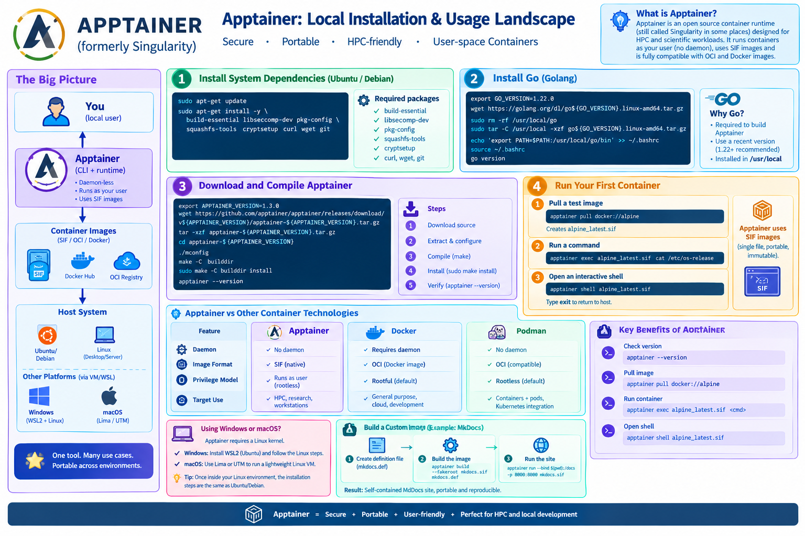
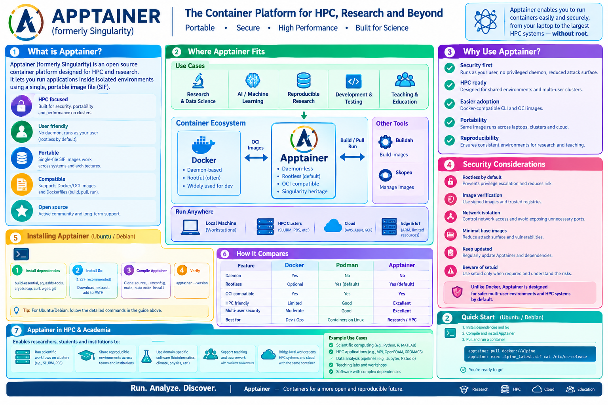

Installing Apptainer locally
Setting up Apptainer (formerly known as Singularity) on a local Linux computer is a straightforward process. Because Apptainer is designed natively for Linux, native installation is easiest, though Windows and macOS users can run it via a Linux virtual machine.
This tutorial walks through installing Apptainer on a local Ubuntu / Debian system and running your first container.
{kind=link}


{kind=link}
Step 1: Install System Dependencies
First, open your terminal and make sure your package lists are up to date. Then, install the essential packages required to compile and run Apptainer (such as build-essential, squashfs-tools, and cryptsetup).
sudo apt-get update
sudo apt-get install -y \
build-essential \
libseccomp-dev \
pkg-config \
squashfs-tools \
cryptsetup \
curl \
wget \
git
Step 2: Install Go (Golang)
Apptainer is written in Go. Since system repositories often carry outdated versions, it is best to download and install a recent stable version directly from the official Go website.
-
Download Go (check the official site for the latest version if needed;
1.22.xor newer is standard): -
Extract and install it to
/usr/local: -
Add Go to your system PATH:
Verify the installation by running:
Step 3: Download and Compile Apptainer
Next, download the source code for the latest Apptainer release from GitHub and compile it.
-
Clone or download the release archive (check GitHub releases for the latest version number, e.g.,
v1.3.xor later): -
Configure and compile:
-
Install globally:
Verify that Apptainer is successfully installed:
Step 4: Run Your First Container
Unlike Docker, Apptainer runs containers as single-file images called SIF (Singularity Image Format) and executes them with the privileges of the invoking user, making it ideal for local workstations and shared clusters.
- Pull a test image from an OCI registry (like Docker Hub):
This downloads the Alpine Linux Docker image and automatically converts it into a local alpine_latest.sif file.
2. Execute a command inside the container:
- Open an interactive shell inside the container:
You are now inside an isolated Alpine environment. Type exit to return to your host terminal.
Using Windows or macOS?
Apptainer requires a Linux kernel. If you are on Windows, install WSL 2 (Ubuntu) and follow the steps above inside your WSL terminal. If you are on a Mac, use Lima or UTM to spin up a lightweight Linux environment first.
Appendix: Creating a Custom Apptainer Image for MkDocs
If you want to package a documentation site built with MkDocs and its Material theme inside an immutable Apptainer image, you can use a definition (.def) file. This approach ensures your documentation is fully self-contained and reproducible.
1. Create the Definition File (mkdocs.def)
Create a file named mkdocs.def using a text editor:
Bootstrap: docker
From: python:3.11-slim
%post
# Update system packages and install necessary tools
apt-get update && apt-get install -y --no-install-recommends \
git \
curl \
&& rm -rf /var/lib/apt/lists/*
# Install MkDocs and the Material theme
pip install --no-cache-dir \
mkdocs \
mkdocs-material
%environment
# Set default environment variables if needed
export LC_ALL=C.UTF-8
export LANG=C.UTF-8
%runscript
# Default behavior when running the container (e.g., serve the site)
# Assumes your MkDocs project directory is mounted to /docs inside the container
cd /docs
exec mkdocs serve -a 0.0.0.0:8000
%labels
Author YourName
Version 1.0
Description Apptainer image containing MkDocs and MkDocs-Material
2. Build the SIF Image
Because building a container image requires administrative privileges to create the file system, you can build it locally using --fakeroot (which allows unprivileged users to build containers using user namespaces):
This compiles your definition file and outputs a single, portable mkdocs.sif file.
3. Run the MkDocs Container and Serve Your Website
To use the image, navigate to the local directory where your MkDocs project (containing your mkdocs.yml file and docs/ folder) is located.
You can bind your current host directory to the /docs mount point inside the container and expose port 8000 to your host machine:
Once running, open your web browser and navigate to http://localhost:8000 to view your live MkDocs website.